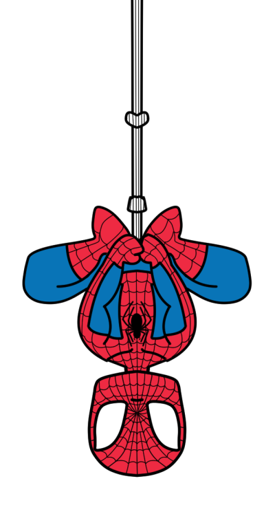

The Spider
Spider-Man is a fictional superhero created by writer-editor Stan Lee and writer-artist Steve Ditko for Marvel Comics. He first appeared in the anthology comic book Amazing Fantasy #15 (August 1962) in the Silver Age of Comic Books.
The real identity of Spiderman is Peter Parker, an orphan being raised by his Aunt May and Uncle Ben in New York City after the death of his parents in a plane crash.
Peter Parker is an high-school student at Midtown High School. During a science exhibit he is bitten by a radioactive spider and "acquires the agility and proportionate strength of an arachnid". Along with super strength, Parker gains the ability to adhere to walls and ceilings. Through his native knack for science, he develops a gadget that lets him fire adhesive webbing of his own design through small, wrist-mounted barrels.
Initially, Peter uses these abilities for stardom, but after letting a burglar escape who is responsible for shooting his uncle, he learns to use his power to fight crime.
Friends and Foes
Peter friends and classmates are Flash Thompson and Harry Osborn.
During the story Peter also has romantic insterests for Gwen Stacey and Mary Jane Watson.
During his fight to the crime Spiderman encounters many villains, the most famous of whom being Doctor Octopus, Green Goblin, Rhino, Shocker, Sandman, Carnage and Venom.
The Authors
Stan Lee and Steve Dikto are the credited authors for Spiderman.
Many artists have contributed to the illustrations of the carchater like: John Romita, Todd McFarlane , John Buscema and Ross Andru.
More on Spidey
You can find more on Spiderman on the Spiderman Wikipedia Page
